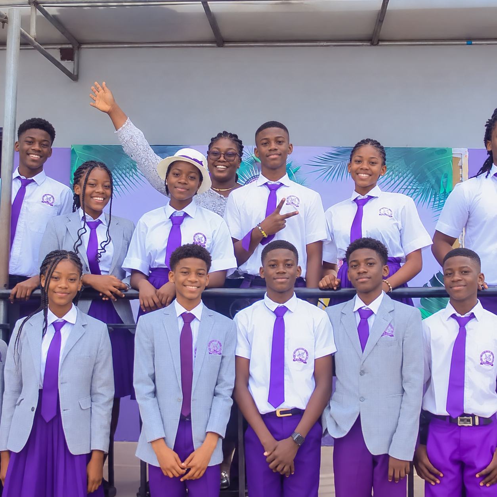
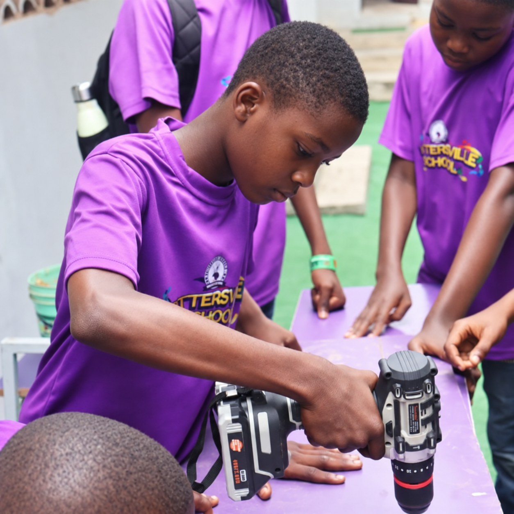

Early discovery
Nursery
Warm routines, playful exploration, language confidence, and the safety young children need before they can truly flourish.
Ask about Nursery →Admissions are open
A place of discovery, character development, and academic excellence for Nursery, Primary, and Secondary learners in Lagos.

The Pottersville experience
Prospective parents are not only choosing classrooms. They are choosing daily rhythm, trusted adults, meaningful friendships, strong academics, and a place where their child is known.
The Proprietor remains part of the public story, while student imagery is anonymized for privacy and safe marketing use.
Nursery to Secondary
The journey is designed to move children from wonder, to confidence, to purpose.
Warm routines, playful exploration, language confidence, and the safety young children need before they can truly flourish.
Ask about Nursery →Reading, numeracy, creativity, projects, and classroom habits that help pupils understand ideas instead of simply memorising them.
Ask about Primary →Subject depth, examination readiness, character formation, leadership, and the confidence to step into the wider world.
Ask about Secondary →Beyond the classroom
Pottersville pairs formal learning with facilities and enrichment that help pupils test ideas, move their bodies, build skills, and prepare for recognised examinations.
Speak with admissionsHands-on science spaces for curiosity, practice, and discovery.
Digital tools that make lessons clearer, richer, and easier to apply.
Creative and vocational exposure across design, photography, craft, cooking, and practical trades.
Movement, sport, farming, swimming, horse riding, and memorable shared experiences.
English, French, and Nigerian language learning that builds cultural confidence.
Structured preparation for WAEC, NECO, UTME, and the habits behind strong outcomes.
See the school
The page now uses Pottersville's exact uniform language, anonymized student imagery, and a short reel so visitors get a fuller sense of daily life.

Demo video
A short silent showcase video with branded motion graphics, anonymized student imagery, and the unchanged Proprietor photo.
Admissions
Application forms are available for Primary and Secondary learners. Contact the school to ask questions, confirm available places, and plan your visit.
Visit Pottersville
Ask about the right stage, available spaces, uniforms, curriculum, fees, and what a normal school day looks like.
Chat on WhatsApp →